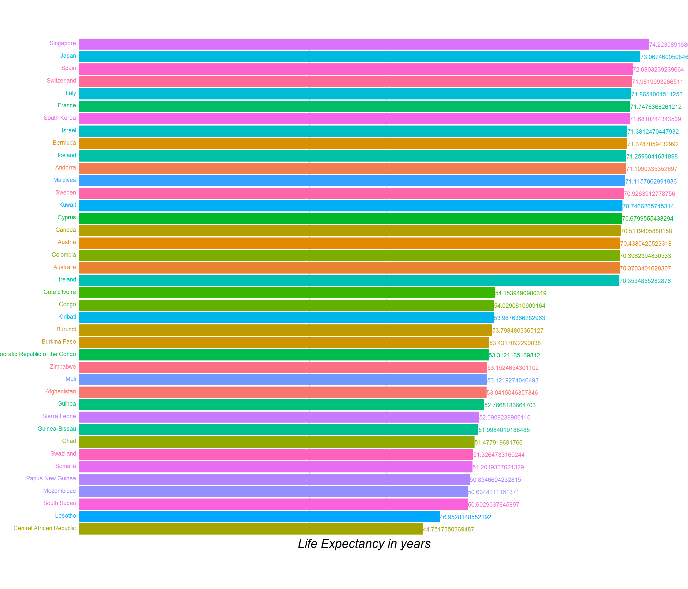

Chapter 5 Deaths comparing cause, age, and sex
To understand the mortality rates of the people of different age groups, we downloaded datasets from the website http://ghdx.healthdata.org/gbd-results-tool and then plotted the basic plots relating the number of deaths to different age groups and sex.
As the ages were grouped this way in the actual dataset source, we preferred to take it this way. There is no particular reason for choosing unequal intervals of age.
The plots and information stated corresponds to data collectced from the year 1990 to 2016. Also, wherever average is mentioned, it is an average taken per annum from 1990 to 2017.
###CODE TO READ DATA FROM THE FILES
#reading csv files into a dataframes and
#preprocessing, forming proper datasets for plotting---------------------
csv <- read.csv(file = 'data/total_all_causes.csv', header = TRUE)
data_all <- as.data.frame(csv)
#preprocessing and forming proper datasets for plotting------------------
#--------------------------
#over all data
data_all_2 <- data_all[which(data_all$metric == 'Number'), ]
data_all_2$age <- plyr::revalue(data_all_2$age, c("1 to 4"="1-4 years"))
death_numbers_2 <- data_all_2 %>%
group_by(age, sex) %>%
dplyr::summarise(val_sum=sum(val),
val_mean=(mean(val)))
death_numbers_2$age <- factor(death_numbers_2$age, levels = c("<1 year", "1-4 years", "5-14 years", "15-49 years", "50-69 years", "70+ years"))
#--------------------------
#injuries
csv3 <- read.csv(file = 'data/injuries.csv', header = TRUE)
data_injuries <- as.data.frame(csv3)
data_injuries2 <- data_injuries[which(data_injuries$metric == 'Number'), ]
data_injuries2$age <- plyr::revalue(data_injuries2$age, c("1 to 4"="1-4 years"))
data_injuries3 <- data_injuries2 %>%
group_by(age, cause) %>%
dplyr::summarise(val_sum=sum(val),
val_mean=(mean(val)))
data_injuries3$age <- factor(data_injuries3$age, levels = c("<1 year", "1-4 years", "5-14 years", "15-49 years", "50-69 years", "70+ years"))
#---------------------------
#Deatsh due to communicable diseases
csv4 <- read.csv(file = 'data/communicable-1.csv', header = TRUE)
csv5 <- read.csv(file = 'data/communicable-2.csv', header = TRUE)
df4 <- as.data.frame(csv4)
df5 <- as.data.frame(csv5)
df4 <- df4[which(df4$metric == 'Number'), ]
df5 <- df5[which(df5$metric == 'Number'), ]
df_comm <- rbind(df4, df5)
df_comm$age <- plyr::revalue(df_comm$age, c("1 to 4"="1-4 years"))
data_comm_a <- df_comm %>%
group_by(age, cause) %>%
dplyr::summarise(val_sum=sum(val),
val_mean=(mean(val)))
data_comm_a$age <- factor(data_comm_a$age, levels = c("<1 year", "1-4 years", "5-14 years", "15-49 years", "50-69 years", "70+ years"))
#---------------------------
#Deatsh due to communicable diseases
csv6 <- read.csv(file = 'data/non_communicable-1.csv', header = TRUE)
csv7 <- read.csv(file = 'data/non_communicable-2.csv', header = TRUE)
csv8 <- read.csv(file = 'data/non_communicable-3.csv', header = TRUE)
df6 <- as.data.frame(csv6)
df6 <- df6[which(df6$metric == 'Number'), ]
df7 <- as.data.frame(csv7)
df7 <- df7[which(df7$metric == 'Number'), ]
df8 <- as.data.frame(csv8)
df8 <- df8[which(df8$metric == 'Number'), ]
df_noncomm <- rbind(df6, df7, df8)
df_noncomm$age <- plyr::revalue(df_noncomm$age, c("1 to 4"="1-4 years"))
data_noncomm_a <- df_noncomm %>%
group_by(age, cause) %>%
dplyr::summarise(val_sum=sum(val),
val_mean=(mean(val)))
data_noncomm_a$age <- factor(data_noncomm_a$age, levels = c("<1 year", "1-4 years", "5-14 years", "15-49 years", "50-69 years", "70+ years"))#From here starts the plots comparing the age groups
#plot --- avg deaths vs age (all causes)
death_numbers_2a = aggregate(val_mean ~ age, data=death_numbers_2, FUN=sum)
plot_ly(x = death_numbers_2a$age, y = death_numbers_2a$val_mean, type = "bar") %>%
layout(title = "Avg. no. of deaths vs Age group",
xaxis = list(title = "Age Groups",
zeroline = FALSE),
yaxis = list(title = "Avg. no. of deaths",
zeroline = FALSE),
font=list(family="Times New Roman", size=12))From the plot, we see that the average number of deaths in the age group 70+ years is maximum and the average number of deaths in the age group 5-14 years is minimum. Also, it is interesting to see that the average number of deaths in the age groups 1-4 and 5-14 are less that the average number of deaths in age groups <1 year and 15-49 years. Overall, the average number of deaths decrease till 5-14 years age group and then increases.
Why are the values as shown? What are the major causes of death? How do deaths due to various causes vary with age? These are the questions we wish to answer on further exploring and visualizing the dataset.
Let us take a look at the causes of deaths (mentioned in the dataset).
#Plot showing various causes of death
df_big <- rbind(data_injuries3, data_comm_a, data_noncomm_a)
df_big = aggregate(val_mean ~ cause, data=df_big, FUN=sum)
#df_big$cause <- factor(data$cause, levels = unique(data$cause)[order(data$val_mean, decreasing = TRUE)])
df_big <- df_big[order(df_big$val_mean),]
plot_ly(df_big, x = ~val_mean, y = ~cause, type = "bar") %>%
layout(title="Causes of death vs Average nunber of deaths",
xaxis = list(title = "Average number of deaths",
zeroline = FALSE, family = "times new roman"),
yaxis = list(title = "Causes of death",
zeroline = FALSE, family = "times new roman",
categoryorder = "array", categoryarray = df_big$cause),
font=list(family="Times New Roman", size=12))This plot shows the causes of deaths vs average number of deaths. As we see, mental disorders cause the least number of deaths while cardiovascular diseases cause the maximum number of deaths.
The causes of death can be divided into three categories as follows: 1. injuries, 2. Communicable, maternal, neonatal, and nutritional diseases, and 3. Non-communicable diseases. Let us compare the number of deaths caused by each of these categories for the age groups.
In this analysis, let us first check the deaths due to injuries of each age group.
Injuries
injuries_death_numbers = aggregate(val_mean ~ age, data=data_injuries3, FUN=sum)
plot_ly(x = injuries_death_numbers$age, y = injuries_death_numbers$val_mean, type = "bar") %>%
layout(title = "Avg. no. of deaths due to injuries vs Age group",
xaxis = list(title = "Age Groups",
zeroline = FALSE),
yaxis = list(title = "Avg. no. of deaths due to injuries",
zeroline = FALSE),
font=list(family="Times New Roman", size=12))From this graph, we can see that more number of deaths due to injuries are in the 15-49 years age group. It seems a little natural that this number would be high because the width of this age group is high. Now, let us dive into what the specific causes were, under this subgroup of injuries.
plot_ly(data_injuries3, x = ~age, y = ~val_mean, color = ~cause, type = "bar") %>%
layout(title="Avg. no. of deaths due to injuries vs Age",
xaxis = list(title = "Age Groups",
zeroline = FALSE),
yaxis = list(title = "Avg. no. of deaths due to injuries",
zeroline = FALSE),
font=list(family="Times New Roman", size=12))This plot reveals a lot of information. Check the first three age groups. The people in these age groups and this category of causes of death (injuries) mostly died because of unintentional injuries. The common unintensional injuries include drowning, falls, poisoning, etc. As kids do not know how to handle the situations at their age, there are more chances of them losing life due to unintentional injuries as shown in the plot. Also, self-harm and interpersonal violence are very less in these three age groups. I think one of the most important reason for that is that people usually remain carefree during this age. They usually do not have any real life worries in life.
In contrast, the number of deaths due to self-harm and interpersonal violence is most in the age group of 15-49 years (middle-age group). The stress levels are pretty high in this age group. The reasons can be many ranging from financial problems to heart breaks.
In all the age groups, the average number of deaths due to self-harm and interpersoanl violence is less than the other two causes except for the age group 15-49 years.
Following is a mosaic plot that gives the information of the same data in relative fashion. Here, we do not know the actual values by observing the plot alone. So, bar graph using plotly seem to be a better option than mosaic plots.
data_injuries4 <- data_injuries3 %>% select(age, cause, val_mean)
data_injuries4$val_mean <- as.integer(data_injuries4$val_mean)
colnames(data_injuries4) <- c("age", "cause", "Freq")
ggplot(data_injuries4) +
geom_mosaic(
aes(x=product(cause, age), # cut from right to left
weight=Freq,
fill=cause
),
divider=c("vspine" , "hspine") # equivalent to divider=ddecker()
) +
ggtitle("Mosaic plot") +
xlab("Age groups") + ylab("Causes (in injuries category)")
Communicable, maternal, neonatal, and nutritional diseases
communicable_death_numbers = aggregate(val_mean ~ age, data=data_comm_a, FUN=sum)
plot_ly(x = communicable_death_numbers$age, y = communicable_death_numbers$val_mean, type = "bar") %>%
layout(title = "Avg. no. of deaths due to communicable diseases vs Age group",
xaxis = list(title = "Age Groups",
zeroline = FALSE),
yaxis = list(title = "Avg. no. of deaths due to communicable diseases",
zeroline = FALSE),
font=list(family="Times New Roman", size=12))From this graph, we can see that maximum average number of deaths in this category are in the age group of <1 year and the minimum average number of deaths are in the age group 4-15 years. Let us explore further on what this category of causes includes and how each of the causes is responsible for deaths.
plot_ly(data_comm_a, x = ~age, y = ~val_mean, color = ~cause, type = "bar") %>%
layout(title="Avg. no. of deaths due to communicable diseases vs Age",
xaxis = list(title = "Age Groups",
zeroline = FALSE, family = "times new roman"),
yaxis = list(title = "Avg. no. of deaths communicable diseases",
zeroline = FALSE, family = "times new roman"),
font=list(family="Times New Roman", size=12))In the age group <1 year, the one cause that is responsible for maximum number of deaths is ‘Maternal and neonatal disorders’. This cause is prominnant only inn two age groups <1 year and 15-49 years. In all other age groups, the average number of deaths due to this is negligible. The age group 15-49 has the maximum average number of deaths dur to ‘HIV/AIDS and sexually transmitted infections’. In all the age groups, ‘Respiratory infections and tuberculosis’ seems to be one the main reasons of deaths under this category causes of deaths.
Again, following is the mosaic plot that gives us the information about the data in relative sense. Similar to the previous mosaic plot, we do not get to know the true values from mosaic plots. Also, as the set of boxes representing same cause do not start at the same point, it gets difficult to compare too. In addition, it also gets difficult as the number of causes increase. So, we will no longer check the mosaic plots for our graphs when the number of causes are high.
data_comm_b <- data_comm_a %>% select(age, cause, val_mean)
data_comm_b$val_mean <- as.integer(data_comm_b$val_mean)
colnames(data_comm_b) <- c("age", "cause", "Freq")
ggplot(data_comm_b) +
geom_mosaic(
aes(x=product(cause, age), # cut from right to left
weight=Freq,
fill=cause
),
divider=c("vspine" , "hspine") # equivalent to divider=ddecker()
) +
ggtitle("Mosaic plot") +
xlab("Age groups") + ylab("Causes \n (in Communicable, maternal, neonatal, and nutritional diseases category)")Non_communicable diseases
non_communicable_death_numbers = aggregate(val_mean ~ age, data=data_noncomm_a, FUN=sum)
plot_ly(x = non_communicable_death_numbers$age, y = non_communicable_death_numbers$val_mean, type = "bar") %>%
layout(title = "Avg. no. of deaths due to non-communicable diseases vs Age group",
xaxis = list(title = "Age Groups",
zeroline = FALSE),
yaxis = list(title = "Avg. no. of deaths due to non-communicable diseases",
zeroline = FALSE),
font=list(family="Times New Roman", size=12))The trend in the plot is similar to the trend in the first plot. The average number of deaths decrease till the 5-14 years age group and then increases. The increase observed is very steep. The average number of deaths in the age group 70+ years is more than the sum of the average number of deaths of all other age groups under this category of causes of deaths. Let us explore further on what were the main causes under this category.
plot_ly(data_noncomm_a, x = ~age, y = ~val_mean, color = ~cause, type = "bar") %>%
layout(title="Avg. no. of deaths due to non-communicable diseases vs Age",
xaxis = list(title = "Age Groups",
zeroline = FALSE, family = "times new roman"),
yaxis = list(title = "Avg. no. of deaths non-communicable diseases",
zeroline = FALSE, family = "times new roman"),
font=list(family="Times New Roman", size=12))There seem to be less average number of deaths due to non-communicable diseases in the three age groups <1 year, 1-4 years, and 5-14 years. Cardiovascular diseases and Neoplasms are the two main non-communicale diseases that have recoded maximum average number of deaths in this category of causes of deaths.
Let us now check the average number of deaths and causes based on sex.
plot_ly(death_numbers_2, x = ~age, y = ~val_mean, color = ~sex, type = "bar") %>%
layout(title="Avg. no. of deaths vs Age (by sex)",
xaxis = list(title = "Age Groups",
zeroline = FALSE),
yaxis = list(title = "Avg. no. of deaths",
zeroline = FALSE),
font=list(family="Times New Roman", size=12))Comparing the two graphs above, we see that irrespective of the sex, the same pattern of decrese in the average number of deaths till 5-14 years age group and then increase till 70+ years age group is observed.
It can also be observed from the graph that the average number of deaths in males was greater than the average number of deaths in females under all age groups considered except ‘70+ years’ group. Let us explore the division on the average number of death based on sex.
death_numbers_2 <- death_numbers_2 %>% select(age, sex, val_mean)
death_numbers_2$val_mean <- as.integer(death_numbers_2$val_mean)
colnames(death_numbers_2) <- c("age", "sex", "Freq")
ggplot(death_numbers_2) +
geom_mosaic(
aes(x=product(sex, age), # cut from right to left
weight=Freq,
fill=sex
),
divider=c("vspine" , "hspine") # equivalent to divider=ddecker()
) +
ggtitle("Mosaic plot") +
xlab("Age groups") + ylab("Sex")
Here we come back to mosaic plots as it would be easy for comparisons. By looking at the graph we can easily compare the relative average number of deaths in males and females. But again, the accurate value is not known using mosaic plots.
#DATA
data_injuries_sex <- data_injuries2 %>%
group_by(sex, cause) %>%
dplyr::summarise(val_sum=sum(val),
val_mean=(mean(val)))
data_comm_sex <- df_comm %>%
group_by(sex, cause) %>%
dplyr::summarise(val_sum=sum(val),
val_mean=(mean(val)))
data_noncomm_sex <- df_noncomm %>%
group_by(sex, cause) %>%
dplyr::summarise(val_sum=sum(val),
val_mean=(mean(val)))#PLOT injuries
plot_ly(data_injuries_sex, x = ~sex, y = ~val_mean, color = ~cause, type = "bar") %>%
layout(title="Avg. no. of deaths vs Sex (by Injuries)",
xaxis = list(title = "Sex",
zeroline = FALSE),
yaxis = list(title = "Avg. no. of deaths",
zeroline = FALSE),
font=list(family="Times New Roman", size=12))This graph shows the average number of deaths of females and males by the causes of death under the injuries category. Overall, it can be observed that majority of the deaths were due to unintensional injuries. In all the three causes included in the graph, the average number of deaths of females is less than that of males. Deaths due to transport injuries are least among the three in case of females.
#PLOT comm...
plot_ly(data_comm_sex, x = ~sex, y = ~val_mean, color = ~cause, type = "bar") %>%
layout(title="Avg. no. of deaths vs Sex \n (by communicable, maternal, neonatal, and nutritional diseases)",
xaxis = list(title = "Sex",
zeroline = FALSE),
yaxis = list(title = "Avg. no. of deaths",
zeroline = FALSE),
font=list(family="Times New Roman", size=12))From this graph, we observe that the average number of deaths due to enteric infections, HIV/AIDS nad sexually transmitted infections, neglected tropical diseases and malaria, nutritional deficiencies, and other infectious diseases is almost equal in case of females and males.
Huge variation is observed in the average number of deaths due of maternal and neonatal disorders and due to respiratory infections and tuberculosis. In both cases, the average is more in males than that in females. In females, respiratory infections and tuberculosis causes the maximum average number of deaths in this category of deaths and in males, maternal and neonatal disorders cause the maximum average number of deaths.
#PLOT non-communicable diseases
plot_ly(data_noncomm_sex, x = ~sex, y = ~val_mean, color = ~cause, type = "bar") %>%
layout(title="Avg. no. of deaths vs Sex (by non-communicable diseases)",
xaxis = list(title = "Sex",
zeroline = FALSE),
yaxis = list(title = "Avg. no. of deaths",
zeroline = FALSE),
font=list(family="Times New Roman", size=12))In the category of non-communicable diseases, the average number of deaths due to diabetes is approximately equal in both females and males. Cardiovascular diseases and neoplasms (cancer) are the top two cause of death in both males and females under this category of causes of death. Both these have higher count in males than in females. The only disease that caused significantly higher deaths in females than in males under this category of causes of death is neurological disorders.
NOTE: We tried to include cleaveland dot plot / scatter plot, but felt that including bar charts is a better choice on comparing them because of the ease of comparison of values in the bar charts.